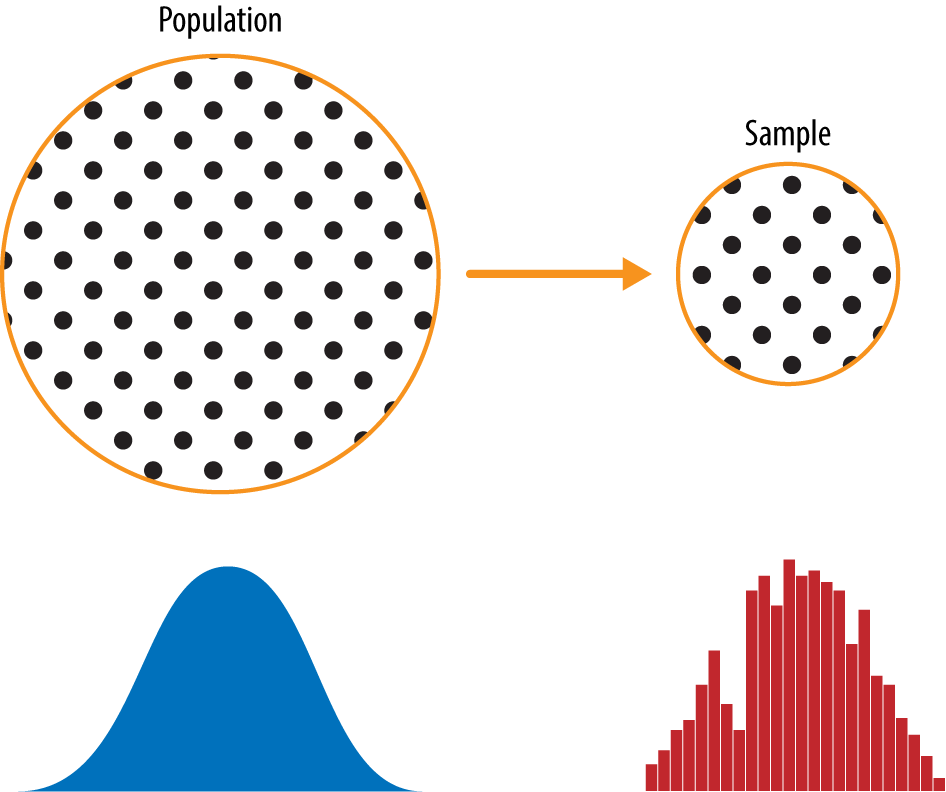
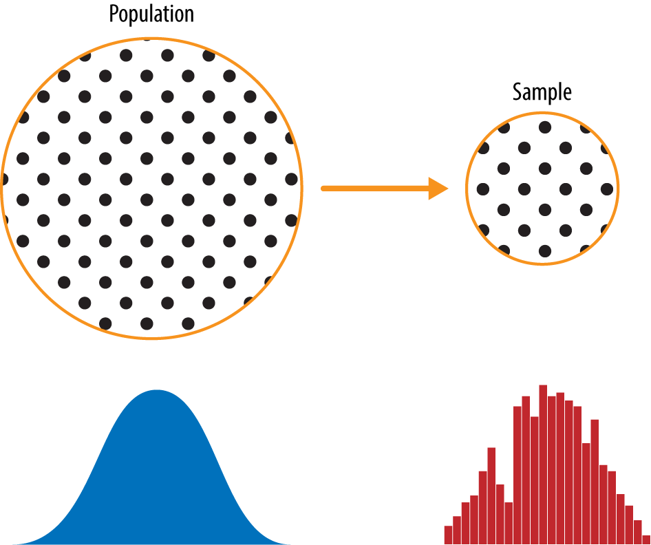

knitr::include_graphics("images/population_sample.png")
Freshwater and marine scientists make observations and gather data about the natural processes and ecology of aquatic organisms and their habitats. They formulate and test hypotheses on the factors that have influenced particular region to create its structure and also make predictions about future changes to the planet.
All of these steps in exploring the fisheries involve the acquisition and analysis of numerical data. A scientist therefore needs to have a firm understanding of statistical and numerical methods as well as the ability to utilize relevant computer software packages, in order to be able to analyze the acquired data.
This guide introduces some of the most important methods of data analysis employed in aquatic sciences and illustrates their use through examples using the R® programming language. These examples can then be used as recipes for the analysis of the reader’s own data, after having learned their application with synthetic data. This introductory chapter deals with data acquisition (Section 1.2), the various types of data (Section 1.3) and the appropriate methods for analyzing data (Section 1.4). We therefore first explore the characteristics of typical data sets and subsequently investigate the various ways of analyzing data using R.
Most data sets in sciences have a very limited sample size and also contain a significant number of uncertainties. Such data sets are typically used to describe rather large natural phenomena, such as a length and size of fish, a optimum conditions for certain habitats or a stock size of certain fish species. The methods described in this guide aim to find a way of predicting the characteristics of a larger population from a much smaller sample. An appropriate sampling strategy is the first step towards obtaining a good data set. The development of a successful strategy for field sampling requires decisions on the sample size and the spatial sampling scheme.
A population is the entire group that you want to draw conclusions about. A sample is the specific group that you will collect data from.
The sample size includes the sample volume, the sample weight and the number of samples collected in the field. The sample weights or volumes can be critical factors if the samples are later analyzed in a laboratory and most statistical methods also have a minimum requirement for the sample size. The sample size also affects the number of sub-samples that can be collected from a single sample. If the population is heterogeneous then the sample needs to be large enough to represent the population’s variability, but on the other hand samples should be as small as possible in order to minimize the time and costs involved in their analysis.
Figure 1.1 shows a schematic that underpins the concepts of population versus sample. The lefthand side represents a population that, in statistics, is assumed to follow an underlying but unknown distribution. The only thing available is the sample data and its empirical distribution, shown on the righthand side. To get from the lefthand side to the righthand side, a sampling procedure is used (represented by an arrow). Traditional statistics focused very much on the lefthand side, using theory based on strong assumptions about the population. Modern statistics has moved to the righthand side, where such assumptions are not needed.
knitr::include_graphics("images/population_sample.png")
The collection of smaller pilot samples is recommended prior to defining a suitable sample size.
The design of the spatial sampling scheme is dependent on the availability of outcrops or other material suitable for sampling. Sampling in coral reefs typically leads to clustered data, whereas sampling along shoreline cliffs results in one-dimensional traverse sampling schemes. A more uniform sampling pattern can be designed where there is 100% exposure or if there are no financial limitations. A regular sampling scheme results in a gridded distribution of sample locations, whereas a uniform sampling strategy includes the random location of a sampling point within a grid square. Although these sampling schemes might be expected to provide superior methods for sampling collection, evenly-spaced sampling locations tend to miss small-scale variations in the area.
The correct sampling strategy will depend on the objectives of the investigation, the type of analysis required and the desired level of confidence in the results. Having chosen a suitable sampling strategy, the quality of the sample can be influenced by a number of factors resulting in the samples not being truly representative of the larger population. It is therefore recommended that the quality of the samples, the method of data analysis employed and the validity of the conclusions drawn from the analysis be checked at each stage of the investigation.
Most data sets consist of numerical measurements, although some information can also be represented by a list of names such as monsoon seasons (northeast and southeast) and species (Fig. 1.3). The available methods for data analysis may require certain types of data sets. These are
nominal data – Information in sciences is sometimes presented as a list of names, e.g., the various fish species collected from a seagrass bed identified in a thin section. In some studies, these data are converted into a binary representation, i.e., one for present and zero for absent. Special statistical methods are available for the analysis of such data sets.
ordinal data – These are numerical data representing observations that can be ranked, but in which the intervals along the scale are irregularly spaced. A classical example or ordinal data is the maturity stage of fish determined from gonads, which is juvenile (I) to spend (V).
ratio data – These data are characterized by a constant length of successive intervals, therefore offering a great advantage over ordinal data. The zero point is the natural termination of the data scale, and this type of data allows for either discrete or continuous data sampling. Examples of such data sets include length or weight data.
interval data – These are ordered data that have a constant length of successive intervals, but in which the data scale is not terminated by zero. Temperatures C and F represent an example of this data type even though arbitrary zero points exist for both scales. This type of data may be sampled continuously or in discrete intervals.
spatial data – These are collected in a 2D or 3D study area. The spatial distribution of a certain fish species, the spatial variation in chlorophyll-a concentration and the distribution of coral reefs are examples of this type of data.
Data analysis uses precise characteristics of small samples to hypothesize about the general phenomenon of interest. Which particular method is used to analyze the data depends on the data type and the project requirements. The various methods available include:
Univariate methods – Each variable is assumed to be independent of the others and is explored individually. The data are presented as a list of numbers representing a series of points on a scaled line. Univariate statistical methods include the collection of information about the variable, such as the minimum and maximum values, the average, and the dispersion about the average. This information is then used to attempt to infer the underlying processes responsible for the variations in the data. Examples are the effects of temperature on the growth of certain fish species.
Bivariate methods – Two variables are investigated together to detect relationships between these two parameters. For example, the correlation coefficient may be calculated to investigate whether there is a linear relationship between two variables. Alternatively, the bivariate regression analysis may be used to find an equation that describes the relationship between the two variables. An example of a bivariate plot is relationship between total length and weight of certain fish species.
Time-series analysis – These methods investigate data sequences as a function of time. The time series is decomposed into a long-term trend, a systematic (periodic, cyclic, rhythmic) component and an irregular (random, stochastic) component. A widely used technique to describe cyclic components of a time series is that of spectral analysis. Examples of the application of these techniques include the investigation of cyclic climatic variations in aquatic organisms.
Spatial analysis – This is the analysis of parameters in 2D or 3D space and hence two or three of the required parameters are coordinate numbers. These methods include descriptive tools to investigate the spatial pattern of geographically distributed data. Other techniques involve spatial regression analysis to detect spatial trends. Also included are 2D and 3D interpolation techniques, which help to estimate surfaces representing the predicted continuous distribution of the variable throughout the area. Examples are spatial distribution of oceanographic variables such as temperature, wind, etc.
Image processing – The processing and analysis of images has become increasingly important in sciences. These methods involve importing and exporting, compressing and decompressing, and displaying images. Image processing also aims to enhance images for improved intelligibility, and to manipulate images in order to increase the signal-to-noise ratio. Advanced techniques are used to extract specific features or analyze shapes and textures, such as for counting microbes in microscope images. Another important application of image processing is in the use of satellite remote sensing to map oceanographic variables and mangrove vegetation.
Multivariate analysis – These methods involve the observation and analysis of more than one statistical variable at a time. Since the graphical representation of multidimensional data sets is difficult, most of these methods include dimension reduction. Multivariate methods are widely used on ecological data, for instance an important usage is in the comparison of species assemblages in ocean sediments for the reconstruction of paleoenvironments.
Some of these methods of data analysis require the application of numerical methods such as interpolation techniques.